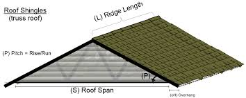

Introduction
As the global population continues to grow and climate change intensifies, the demand for freshwater resources is reaching unprecedented levels. Rainwater harvesting emerges as a practical and sustainable solution to address these challenges. By capturing and utilizing rainwater, we can mitigate water scarcity, reduce environmental impacts, and promote resilience in communities. This essay explores the benefits, methods, and challenges associated with rainwater harvesting, emphasizing its importance in the quest for sustainable water management.
Benefits of Rainwater Harvesting
- Water Conservation
One of the most significant benefits of rainwater harvesting is its potential to conserve precious freshwater resources. By collecting rainwater from roofs or other surfaces, we reduce reliance on conventional water sources such as rivers, lakes, and groundwater. This not only alleviates pressure on these sources but also contributes to their preservation for future generations.
- Cost Savings
Rainwater harvesting systems can lead to substantial cost savings for households and businesses. Utilizing harvested rainwater for non-potable uses, such as irrigation and toilet flushing, reduces water bills. In some cases, the installation of rainwater harvesting systems may qualify for financial incentives or rebates, further enhancing cost-effectiveness.
- Environmental Impact
Harvesting rainwater helps reduce runoff and associated problems such as erosion, flooding, and pollution. By capturing rainwater before it enters stormwater systems, we can minimize the amount of polluted runoff that reaches water bodies. This reduces the risk of water contamination and protects aquatic ecosystems.
- Resilience and Self-Sufficiency
: Rainwater harvesting enhances resilience and self-sufficiency, particularly in areas prone to water shortages or natural disasters. Having an independent water source can be crucial during droughts or emergencies when conventional supplies may be compromised. This independence also empowers communities to better manage their water resources and adapt to changing conditions.
Rainwater Harvesting System Set-up
Methods of Rainwater Harvest
CITRESRRain barrels are a popular and accessible method for small-scale rainwater harvesting. Typically placed under downspouts, these barrels collect and store rainwater from rooftops. They are suitable for residential use and can be used for watering gardens, lawns, or washing vehicles.RAINGreen roofs, or living roofs, incorporate vegetation into building roofs to capture and utilize rainwater. The plants and soil on a green roof absorb and filter rainwater, which can then be collected and used for irrigation or other purposes. Green roofs also provide insulation and reduce the urban heat island effect.
-
Water Quality
One of the primary concerns with rainwater harvesting is ensuring water quality. Rainwater can be contaminated by debris, pollutants, or pathogens from collection surfaces. Effective filtration and treatment systems are essential to ensure that harvested rainwater is safe for its intended uses, particularly for potable purposes.
-
Initial Cost
The initial cost of installing a rainwater harvesting system can be a barrier for some individuals or organizations. While long-term savings and benefits may outweigh the upfront investment, financial considerations may influence the decision to implement such systems.
Rainwater harvesting represents a viable and sustainable approach to managing water resources in an increasingly challenged world. By capturing and utilizing rainwater, we can conserve freshwater, reduce environmental impacts, and enhance resilience against water shortages. While there are challenges to address, the benefits of rainwater harvesting make it a valuable tool in the pursuit of sustainable water management. As we continue to confront global water issues, embracing and promoting rainwater harvesting can play a crucial role in ensuring a more secure and sustainable future.